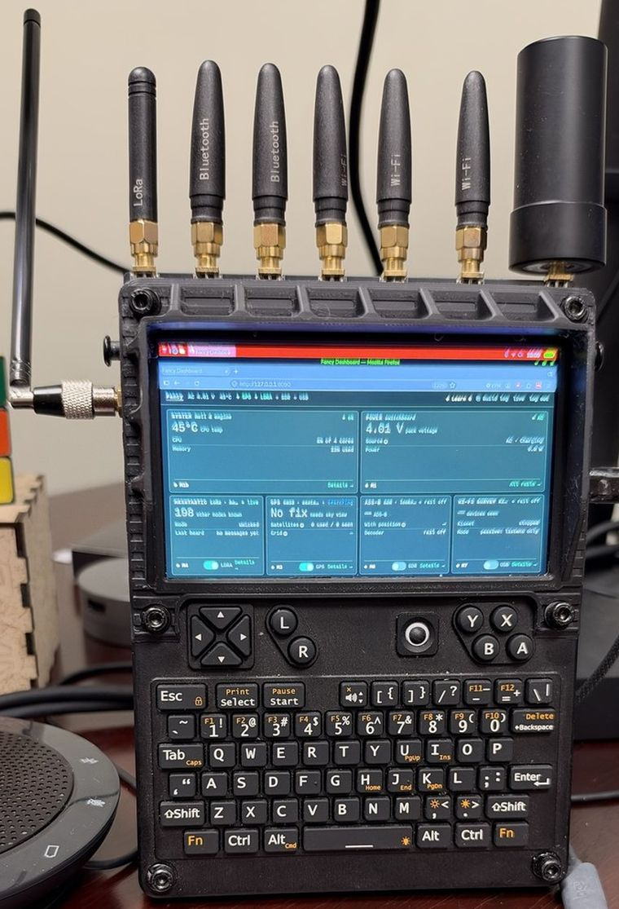
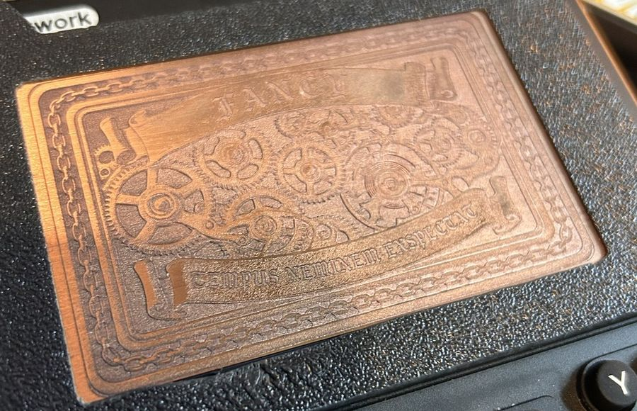
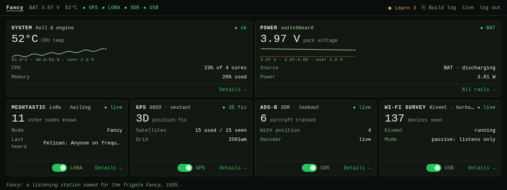
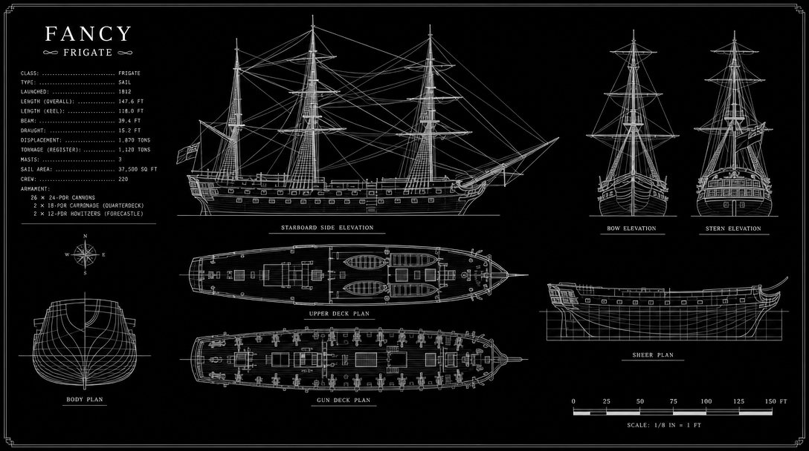

ClockworkPi uConsole · build repository
A pocket radio lab that sails with papers.
Fancy is a uConsole rebuilt as a handheld receive station: software-defined radio, LoRa mesh, GNSS and a Wi-Fi monitor card on eight antennas, driven by a dashboard that teaches as it runs. This repository is the real deliverable. Every spec has a source, every unconfirmed claim says so, and the device can be rebuilt from the paperwork.

Ship's particulars

What it hears
Pick a band to see which radio covers it, which antenna serves it, and how far the claim has been proven on this hardware.
Illustration, not a capture. Band edges and the log scale are true; this page draws the traces itself. The 1.74 GHz tuner limit is the vendor's figure.
The log
The paperwork started while the parts were still at sea. All dates are 2026, drawn from the build log.
JP1 gets bridged, and the Meshnology pair goes in.Scored against the hardware
An AI coding agent did much of the research and drafting, and agents write confident, well-formatted, wrong specifications. So the repository is built to make wrong claims cheap to find.
Anything not confirmed on this hardware says so in the sentence that makes the claim.
Every estimate names the command whose output will replace it.
Commands, expected output and recorded results sit in logs a reader can check.
gpsd config named the GNSS port every document named.That port does not exist on this board. Its checklist row caught it.WrongThe Chart Table
The dashboard runs on Fancy and doubles as a course. Lessons read live values from the radios, and a lab passes only when the device's own status says so, then checks that everything was put back.
4 tracks, 17 modules, 62 lessons, 24 labs, 54 glossary terms.

Writing labs precise enough to grade found what the checklist missed: a GPS lab that could never pass, a mesh radio that beacons on its own, and a Kismet default that logged data frames.
The original Fancy was Henry Every's pirate ship, 1695. This one carries a letter.
aircrack-ng and netexec are installed for own gear, a documented engagement, or a CTF whose rules permit it. Nothing else.
A PRIVATEER WITHOUT PAPERS IS JUST A PIRATE
Open on the bench
The repository keeps its unfinished business in plain view, so this page does too.
No warning, under load, with charge left in the pack. Cause unverified, likely on the system side.
Fuel gauge percent is wrong on this pack, and charge current over-reads by at least 1.4×.
Four contact remnants on the NVMe board need trimming and Kapton near the pouches.
The card lists monitor mode on both. No survey is on record for either.
The passive detector for offensive devices is built but unfinished, waiting on a platform blocker.
The LTE module is powered on the bench. AT commands have not run, and nothing has decoded cleanly.
